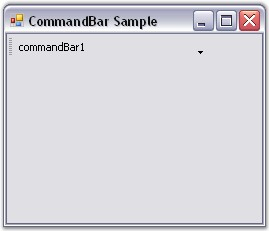

In addition to using the designer for designing the CommandBar layout, it is also feasible to use the CommandBar's programmatic API for creating and setting up the application's CommandBars.
The following section covers the steps involved in creating, initializing and setting up CommandBars in a Windows Forms application programmatically.
1. Include the required namespace.
|
[C#]
using Syncfusion.Windows.Forms.Tools; |
|
[VB.NET]
Imports Syncfusion.Windows.Forms.Tools |
2. Create instances of the Essential Tools CommandBarController class and CommandBar control within the application's main form. Call the CommandBarController's BeginInit method to signal the start of initialization.
|
[C#]
private Syncfusion.Windows.Forms.Tools.CommandBarController commandBarController1; private Syncfusion.Windows.Forms.Tools.CommandBar commandBar1; private System.Windows.Forms.Panel panel1;
this.commandBarController1 = new Syncfusion.Windows.Forms.Tools.CommandBarController(); ((System.ComponentModel.ISupportInitialize)(this.commandBarController1)).BeginInit(); this.commandBar1 = new Syncfusion.Windows.Forms.Tools.CommandBar(); this.panel1 = new System.Windows.Forms.Panel(); |
|
[VB.NET]
Private commandBarController1 As Syncfusion.Windows.Forms.Tools.CommandBarController Private commandBar1 As Syncfusion.Windows.Forms.Tools.CommandBar Private panel1 As System.Windows.Forms.Panel
Me.commandBarController1 = New Syncfusion.Windows.Forms.Tools.CommandBarController() CType(Me.commandBarController1, System.ComponentModel.ISupportInitialize).BeginInit() Me.commandBar1 = New Syncfusion.Windows.Forms.Tools.CommandBar() Me.panel1 = New System.Windows.Forms.Panel() |
3. Set the form to be the host for all the CommandBars using the CommandBarController's HostForm property.
|
[C#]
// Set the CommandBarController.HostForm property. this.commandBarController1.HostForm = this; |
|
[VB.NET]
' Set the CommandBarController.HostForm property. Me.commandBarController1.HostForm = Me |
4. Assign a client control to the CommandBar by adding it to the CommandBar's Controls collection property.
|
[C#]
// Add the panel control containing the toolbar to the CommandBar. this.commandBar1.Controls.AddRange(new System.Windows.Forms.Control[] {this.panel1}); |
|
[VB.NET]
' Add the panel control containing the toolbar to the CommandBar. Me.commandBar1.Controls.AddRange(New System.Windows.Forms.Control() {Me.panel1}) |
5. Add the CommandBar to the CommandBarController through the CommandBarController's CommandBars collection property.
|
[C#]
this.commandBarController1.CommandBars.Add(this.commandBar1); // Set the text for the CommandBar. this.commandBar1.Text = "commandBar1"; |
|
[VB.NET]
Me.commandBarController1.CommandBars.Add(Me.commandBar1) ' Set the text for the CommandBar. Me.commandBar1.Text = "commandBar1" |
6. Call the CommandBarController's EndInit method to signal the end of initialization.
|
[C#]
((System.ComponentModel.ISupportInitialize)(this.commandBarController1)).EndInit(); |
|
[VB.NET]
CType(Me.commandBarController1, System.ComponentModel.ISupportInitialize).EndInit() |
7. Run the application.

Figure 9: CommandBar created Through Code
See Also